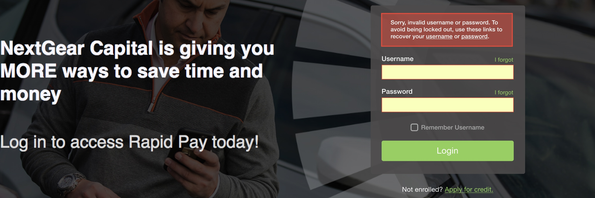
Password Resets
Changing authorization providers surfaces many problems with customers’ credentials
The Challenge
In September, 2017 our customer-facing application changed auth providers. Ideally, a simple update with minimal-to-no impact on users. Three months after the update, Customer Support was receiving 3x as many password related tickets.
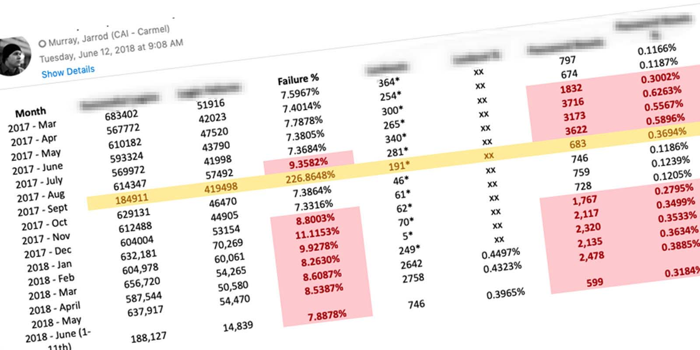
The increase in unsuccessful logins led to increased lock-outs as well. Users did not have the ability to unlock themselves, which led to more phone calls. Customer Support did the math… it costs the company $7.84 to reset a user’s password.
Pre-Kickoff Insights
When this problem first came across my desk, it seemed like a simple fix. My starting point was researching issues with credentials in general.
Role
I was the lead researcher and designer on this project. The project kicked off in February of 2018 and completed in early 2019.
Un Understand
Hypothesis
By allowing users to self-service from the login screen, the number of calls and emails would decrease greatly.
Defining the Problem
I started the Discovery Phase by writing a problem statement. Laying out the issues, the goal of fixing the problem, and the repercussions of ignoring it. Then I researched the origin of credentials and how users received them. I created a Process Flow Diagram that outlined the five departments and three applications used to turn a lead into a user.
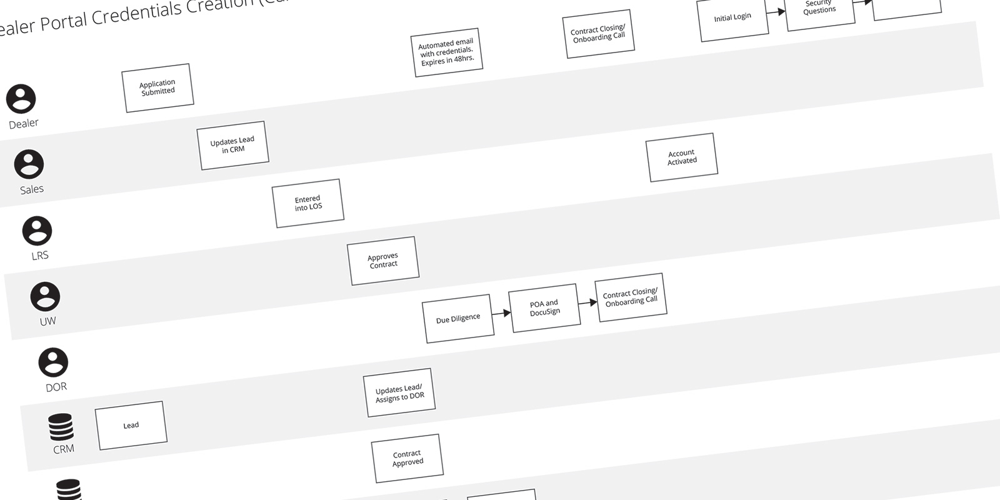
Pain Points Revealed
I discovered the system generates a user’s credentials on submission of the credit application. Those credentials are then emailed to the user. A personal email address was not required and roughly half the applicants leave the field blank. The email also informs users their password expires in 48 hours, which is inaccurate. The timing was also less than ideal since users had only submitted an application… not signed a contract.
A few days later, underwriters review the applications. If approved, an Orientation Representative schedules time for contract closing. At closing, users are told their credentials over the phone and instructed to select a permanent username and password on their initial login.
In actuality… the system asks users to answer security questions and never prompts them to select permanent credentials. All of these issues were adding up… making it very clear why users were having issues.
Reframing the Problem
This was no longer just a self-service problem. My research uncovered failures and mistakes by multiple departments, in multiple applications, and in the overall workflow itself. My next step was to document my research and identify all the previously unknown problems.
Synopsis
I outlined my findings in a Problem Statement Document. My goal was to shine a light on areas needing improvements while offering little-to-no solutions. I felt this document should focus on the problems and not how to solve them. One stakeholder told me this was the "best document he'd had ever seen."
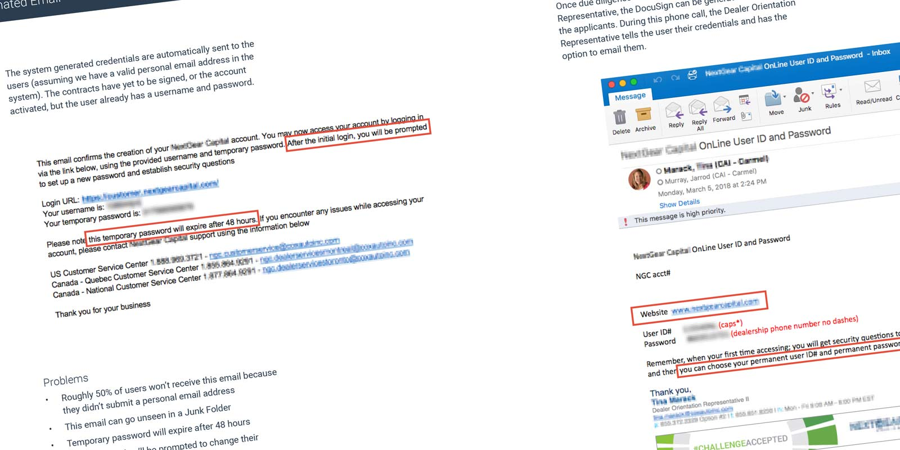
I also provided a Strategy Document, where I set a vision, design criteria, and success metrics for the project. In my experience, when presented together, these two documents can generate a lot of conversation. When a problem is clearly defined and a plan of attack is already in place, it finds itself near the top of the priority list.
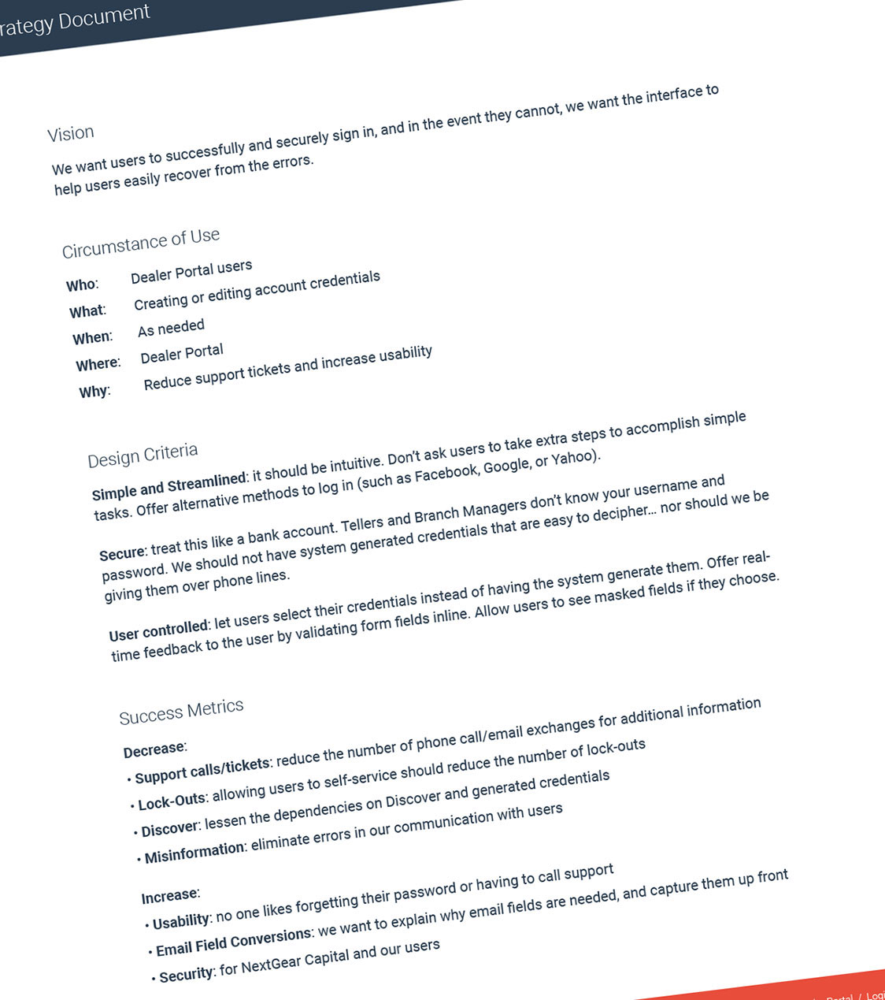
Si Simplify
Process Flow
I wanted to revisit the creation and distribution of credentials. It didn't make sense to send credentials… sometimes weeks… before contract closing. Especially if you tell the recipient the password expires in 48 hours (which it didn't). I created a new Process Flow Diagram that focused on the user and not the internal processes.
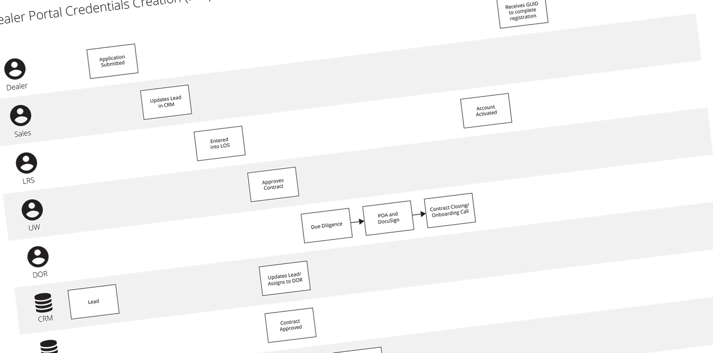
Wireframes
One of the ideas I kicked around, was allowing users to create their credentials themselves. I never liked the idea of the system using a method to create the usernames and passwords. Another idea to lessen the burden on Support was to allow users to login with their Facebook, Yahoo, or Google Account. I sketched out a few ideas to generate conversation.
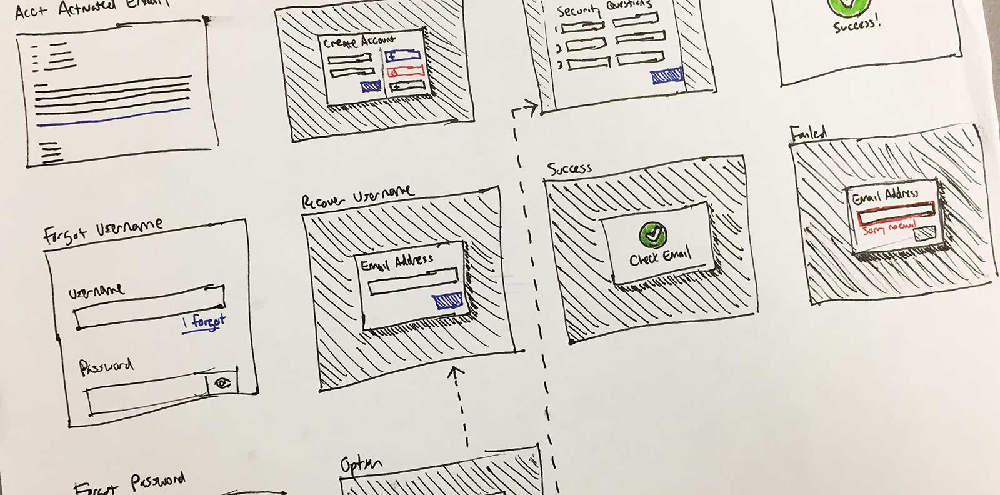
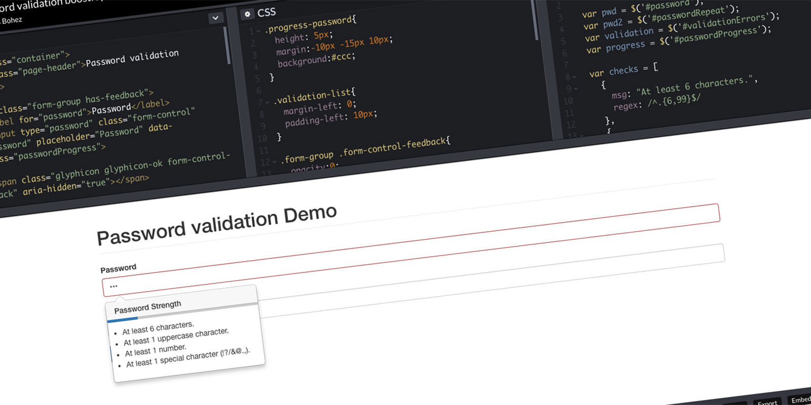
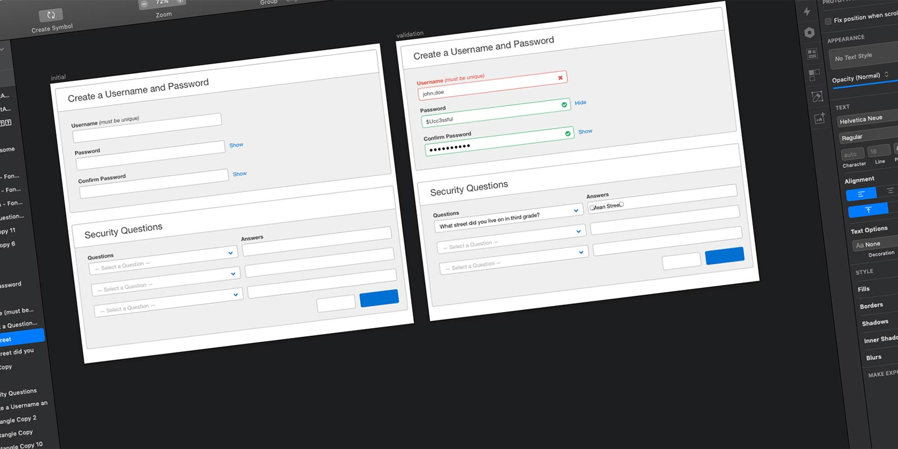
Synopsis
In the end, the team opted for a multi-phase approach. We identified backend processes and emails that could be easily changed. Another team was working on converting the paper credit application into an online application. I addressed the personal email field by having it required and telling users what it would be used for. It was also decided to give access to Password Resets to all Support Representatives, not just Supervisors. These were a few of the backend changes made to improve the experience and lessen the burden on Support.
I worked with Product, Security, and Marketing to craft messages that were informative, secure, and actionable. The goal with the interface, was to downplay Support's role and increase self-service.
Al Align
Parameters
This application was originally built using AngularJS and the Bootstrap framework… current development is done using React as AngularJS is phased out. My goal was to design using default Bootstrap elements and existing styles.
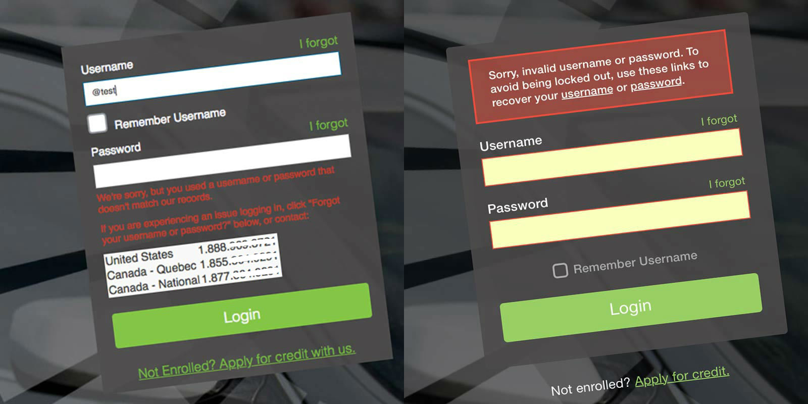
I began in what I considered the most obvious place… the log in form. The form wasn’t going to solve all of the issues I uncovered, but is where users would initiate self-service. I removed the phone numbers, improved the error messaging, and decluttered the form by moving the ‘Remember Username’ and ‘Apply for Credit’ elements to a more appropriate place.
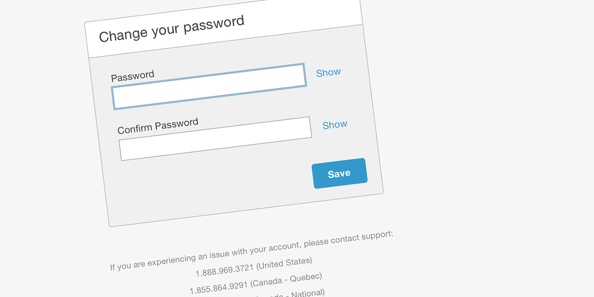
The self-service screens were designed to use default Bootstrap elements. The team implemented a Password validation like the one I provided above. The ‘Show’ option allows users to unmask their password to reduce typos and increase user trust. The phone numbers are listed below… for users that experience an error or cannot self-serve.
Prototype
My next step was to build the workflows for resetting passwords and recovering usernames. I built a high fidelity prototype. “A prototype is worth a 1,000 meetings” is a quote I very much agree with. Building the prototype helped with story-writing, grooming, and sprint planning meetings.
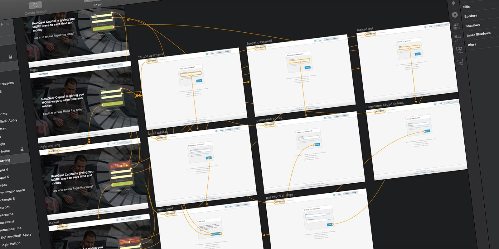
Proposed Solution
The team created four epics… password reset, username recovery, enhancements to the internal support application, and the initial login workflow. Verbiage and system generated emails got treated as one-off stories.
Va Validate
User Testing
These workflows are what I consider "broken" experiences. What I mean by that… you start the workflow in one application and requires something be done outside the system. In this example, requesting a password or username requires the user to follow a link in their inbox. It is very difficult to reproduce these workflows using clickable prototypes, so there has been no validation with users. My plan is to monitor these workflows with analytics to validate the solution.
Takeaways…
Things I Learned
- You must keep digging… there is always more to discover
- Lots of little issues snowball into larger problems
- This was my first time working with a Security Team
The Launch
In November of 2018, the password reset epic was released. The username recovery and initial login epics were released in January of 2019.
The Impact
Metrics are in place to start measuring the success. One metric we monitored was the number of unlocks initiated by the Support Team vs Self-Service by users.
Auth changed Sep '17… my Discovery started Feb '18
The Support Team unlocked 1,983 accounts at the peak of this issue. In the first month after release, only 31 accounts were unlocked by the Support Team. By reducing the unlocks (-1,952) performed by Support, that equates to a savings of $15,303.68 per month.